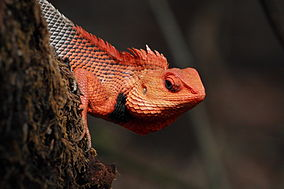

Chandoli National Park is natural World Heritage Site and 317.67 km2 (122.65 sq mi) National Park spread over Kolhapur and Sangli District, Maharashtra state, India, established in May 2004.[2] Earlier it was a Wildlife Sanctuary declared in 1985. Chandoli Park is notable as the southern portion of the Sahyadri Tiger Reserve, with Koyna Wildlife Sanctuary forming the northern part of the reserve.
|  | |
| Location : | Kolhapur District, Sangli District, Maharashtra, India |
| Coordinates | 17°11′30″N 73°46′30″E |
| Area | 317.67 square kilometres (122.65 sq mi) |
| Established | 2004 |
| Governing body | Maharashtra Forest Department |